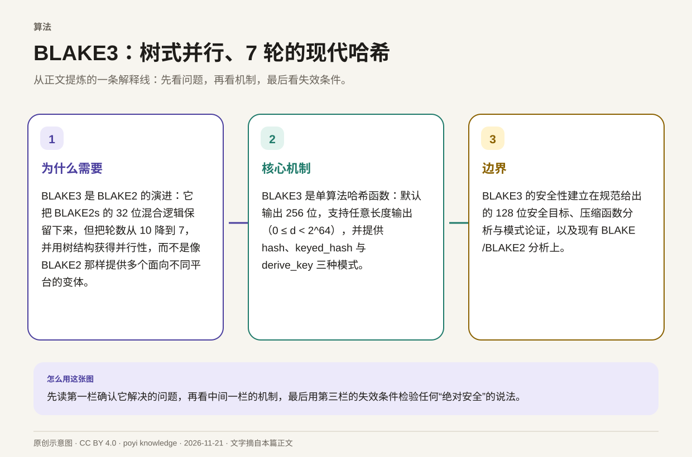
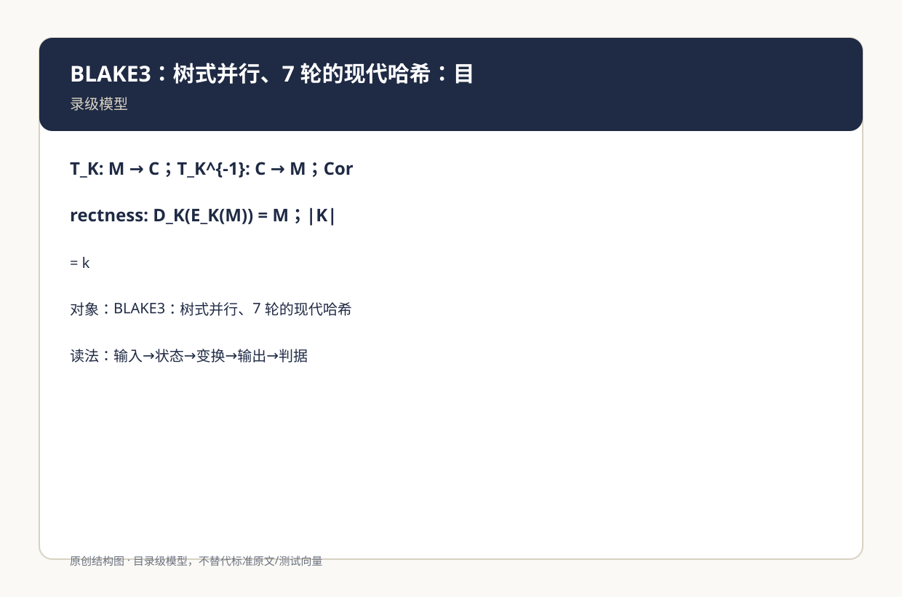

原理与机制
算法：BLAKE3 散列（BLAKE3）。BLAKE3 是单算法哈希函数：默认输出 256 位，支持任意长度输出（0 ≤ d < 2^64），并提供 hash、keyed_hash 与 derive_key 三种模式。它把输入按 1024 字节切成 chunk；chunk 作为二叉树的叶子，左子树满且大于等于右子树，父节点把两个子节点的链接值合并。输入按 64 字节块压缩。压缩函数的状态 v0…v15 由 8 个链接字、4 个 IV 字、64 位计数器 t0/t1、块字节数 b 和域标志 d 组成；IV0…IV7 与 BLAKE2s 相同。它基于 BLAKE2s 的 32 位混合逻辑，但只做 7 轮而不是 BLAKE2s 的 10 轮。每轮对 4×4 状态先做列 G、再做对角 G；G 内使用 16、12、8、7 位循环右移。除最后一轮外，每轮之后消息字按固定置换 2,6,3,10,7,0,4,13,1,11,12,5,9,14,15,8 重排。域标志是位掩码：CHUNK_START=1、CHUNK_END=2、PARENT=4、ROOT=8、KEYED_HASH=16、DERIVE_KEY_CONTEXT=32、DERIVE_KEY_MATERIAL=64。chunk 内每个块的计数器等于 chunk 索引；块长是实际输入字节数（只有最后一个 chunk 的最后一块可短）；第一块加 CHUNK_START，最后一块加 CHUNK_END。父节点用一次压缩：消息字是左子链接值（8 字）加右子链接值（8 字），计数器 0、块长 64，并加 PARENT 标志。普通节点截断压缩输出的前 8 个字作为 32 字节链接值；根节点使用完整 16 字（64 字节）输出，按小端编码。XOF 通过重复根压缩实现：第一次根压缩计数器为 0，之后每多需要 64 字节就把计数器加 1；输出按小端拼接。keyed_hash 模式把 256 位密钥按小端解析成 8 个字作为初始链接值，并在每次压缩上加 KEYED_HASH 标志。derive_key 分两步：先用 DERIVE_KEY_CONTEXT 标志哈希上下文串，得到 8 个密钥字；再用 DERIVE_KEY_MATERIAL 标志哈希密钥材料。

为什么重要
BLAKE3 是 BLAKE2 的演进：它把 BLAKE2s 的 32 位混合逻辑保留下来，但把轮数从 10 降到 7，并用树结构获得并行性，而不是像 BLAKE2 那样提供多个面向不同平台的变体。BLAKE2 于 2012 年公布，RFC 7693 于 2015 年 11 月规定 BLAKE2b 与 BLAKE2s；本批次使用的 BLAKE3 规范版本为 20211102173700。BLAKE3 的目标安全强度是 128 位，默认输出 256 位。7 轮选择基于既有 BLAKE/BLAKE2 密码分析；规范第 4 节给出 128 位安全目标、压缩函数分析与模式论证。树结构提供无界并行度，并支持可验证流式传输与增量更新；这是 BLAKE3 相对 BLAKE2 的主要新能力。规范给出的性能数据：在 Intel Cascade Lake-SP 上单线程峰值约为 BLAKE2b 的 4 倍、SHA-512 的 8 倍、SHA-256 的 12 倍；在 32 位 ARM1176 上约为 SHA-256 的 1.3 倍。
应用与实例
BLAKE3 的统一 API 覆盖普通哈希、带密钥哈希、密钥派生与任意长度输出；同一算法可以服务 BLAKE2 的多种用途，而不需要选择不同变体。keyed_hash 可作带密钥的 PRF/MAC 使用；密钥必须保密且为 256 位，不能把普通 hash 直接当 MAC。XOF 适合需要可扩展输出的场景；树结构支持可验证流式传输与增量更新：可沿根到 chunk 的父节点路径校验单个 chunk；编辑任意位置只需重算被修改的 chunk 及其祖先父节点，而不必重算其右侧全部数据。BLAKE3 也提供官方 35 组测试向量，覆盖 0 到 102400 字节的输入长度与 131 字节输出。

边界与攻击面
BLAKE3 的安全性建立在规范给出的 128 位安全目标、压缩函数分析与模式论证，以及现有 BLAKE/BLAKE2 分析上。实现错误（如 chunk/tree 边界或 flag 组合）会产生错误结果，而不是接近正确的结果。XOF 输出长度：BLAKE3 不对不同输出长度做域分离：较短输出是较长输出的前缀；输出长度因此不是独立的域标签。需要不同域时，应使用 keyed_hash 或 derive_key，而不是改变输出长度。带密钥模式：keyed_hash 的安全性依赖密钥保密与均匀随机；密钥必须是 256 位，实践中不应把无密钥 hash 直接当 MAC。derive_key 通过 context 与 material 两阶段分离不同用途；context 应硬编码、全局唯一且应用特定，不能包含盐、ID 或当前时间等可变数据。树结构实现：根 chunk 的最后一块必须用最后一块之前的链接值重压；父节点块长固定 64；XOF 每次根压缩计数器递增；flag 位必须按规范相加。这些是实现正确性要求，不是可选优化。
历史与背景
- 2012 年：BLAKE2 公布；BLAKE3 规范把 BLAKE2 描述为其演进来源。- 2015 年 11 月：RFC 7693 发布，规定 BLAKE2b 与 BLAKE2s。- 2020 年 1 月 9 日：BLAKE3 规范的首个发布版本提交发布。- 2021 年 11 月 2 日：BLAKE3 规范更新为版本 20211102173700（本批次使用版本）。
逐步示例与核验
复算示例
取标准或公开测试向量中的一组参数，按“输入—执行—输出”记录：先写出该条目的形式式 (h=H(M),\quad H:{0,1}^{*}\to{0,1}^{n})；再按规范顺序执行每一步，最后把输出与独立实现或标准向量逐字节对照。若没有可引用的数值向量，就只记录结构步骤，不伪造输出。
参考出处
- Wikipedia search entry for BLAKE3 散列. https://zh.wikipedia.org/w/index.php?search=BLAKE3%20%E6%95%A3%E5%88%97
- Handbook of Applied Cryptography (Menezes, van Oorschot, Vanstone). https://www.cacr.math.uwaterloo.ca/hac/